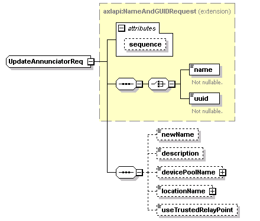

| diagram |
 |
| namespace |
http://www.cisco.com/AXL/API/10.5 |
| type |
extension of axlapi:NameAndGUIDRequest |
| properties |
| base | axlapi:NameAndGUIDRequest |
|
| children |
name uuid newName description devicePoolName locationName useTrustedRelayPoint |
| used by |
|
| attributes |
| Name | Type | Use | Default | Fixed | Annotation | | sequence | xsd:unsignedLong | optional | | | |
|
| source |
<xsd:complexType name="UpdateAnnunciatorReq">
<xsd:complexContent>
<xsd:extension base="axlapi:NameAndGUIDRequest">
<xsd:sequence>
<xsd:element name="newName" type="xsd:string" nillable="false" minOccurs="0" maxOccurs="1"/>
<xsd:element name="description" type="xsd:string" nillable="false" minOccurs="0" maxOccurs="1"/>
<xsd:element name="devicePoolName" type="axlapi:XFkType" nillable="true" minOccurs="0" maxOccurs="1"/>
<xsd:element name="locationName" type="axlapi:XFkType" nillable="false" minOccurs="0" maxOccurs="1"/>
<xsd:element name="useTrustedRelayPoint" type="axlapi:XStatus" default="Default" nillable="false" minOccurs="0" maxOccurs="1"/>
</xsd:sequence>
</xsd:extension>
</xsd:complexContent>
</xsd:complexType> |